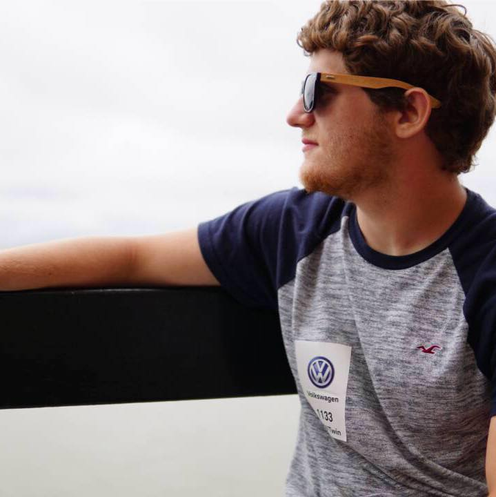

About Me
 Link to GitHub profileMy name is Daniel Adelman. I was originally born in Barcelona, Spain but I moved to Atlanta when I was five years old. I am fluent in both English and Spanish and have basic knowledge of many other languages. My hobbies include playing soccer on the weekends with friends, tinkering with performance modifications to my car, playing video games, and reading the latest news in the tech world. Technology has always been my passion and to be able to manipulate it and make it my own gives me much joy. I love to travel and have been to several countries around the world. These include: Spain, Mexico, Costa Rica, France, England, The Netherlands, and at least a dozen states within the US. I have one sibling, my brother, who is 17 years old currently. He and I played a lot of soccer growing up. In fact, I was the captain of my middle school and high school soccer team. I also played for a select club team that traveled around Georgia competing in the first division league of Georgia.